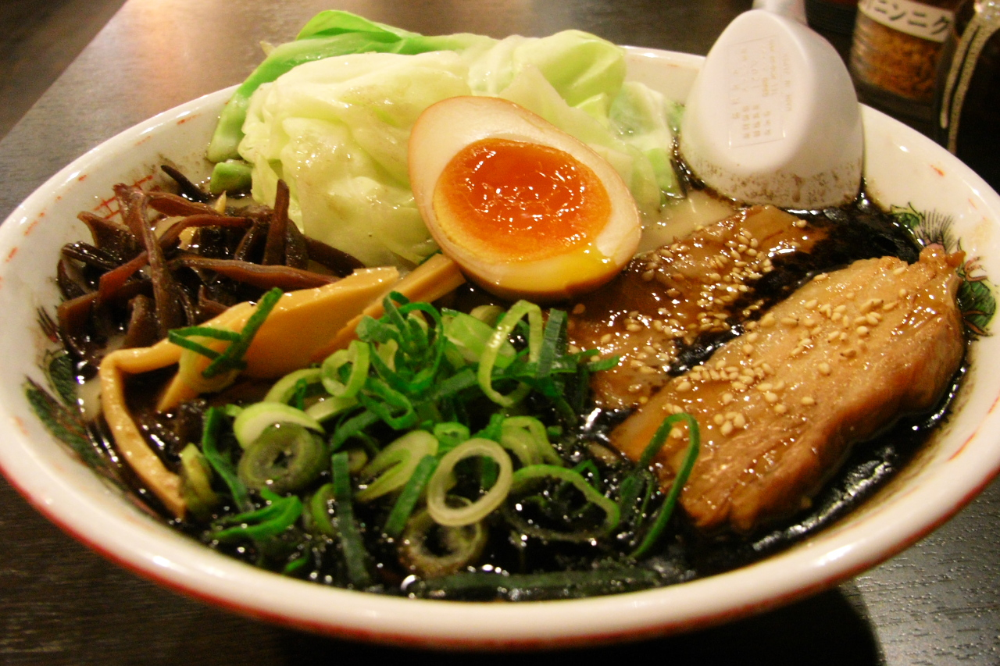

Sushi Village Sushi - 5211 University Way NE, Seattle, WA 98105 Big Tuna Sushi - 4336 Roosevelt Way NE b, Seattle, WA 98105
Ramen  Samurai Noodle - 4138 University Way NE, Seattle, WA 98105 U:don Fresh Noodle Station - 1640 12th Ave, Seattle, WA 98122